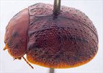
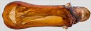
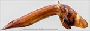
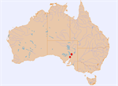

Click on images to enlarge
![Male, Wilpena, South Australia [2001-126]](assets/image/Ta85/Ta85_A01-126.jpg){kind=link}

Male, Wilpena, South Australia [2001-126]
{kind=link}

Aedeagus, dorsal view (Pitchi Ritchi Pass, South Australia)
{kind=link}

Aedeagus, lateral view (Pitchi Ritchi Pass, South Australia)
{kind=link}

Distribution
Name
Trachymela sp. Ta85
Reference specimen
2001-196, Pitchi Ritchi Pass, South Australia.
Adult Description
Length: ♂ 7.2–7.9 mm (n=7), ♀ 7.4–8.4 mm (n=9).
Colouration:
- Head: Uniformly mid-brown, rarely with fronto-clypeal suture darker brown, labrum yellow-brown, mandibles black-tipped; antennomeres 1–3 straw-brown, 4–11 concolorous with antennomeres 1–3 or (rarely) fractionally darker.
- Pronotum: Brown, concolorous with head, a short longitudinal black macula extends on each side from just behind front margin roughly level with inside edge of each eye to about half distance to posterior margin, a small round black elevated macula is centred on each foveal area, sometimes a short thin, oblique black streak is present behind this foveal patch and slightly towards centre.
- Scutellum: Brown, concolorous with pronotum, often narrowly edged in darker brown.
- Elytra: Brown, concolorous with pronotum, with a common, black oval area centred on elytral suture at summit, the suture is frequently black anteriorly from there to scutellum, sometimes also for a short extent posteriorly from patch but never to apex, a black ridge or line of black verrucae extends posteriorly for a short distance from anterior margin about midway between scutellum and humeral callus, black, wart-like elevated verrucae are scattered over elytral surface, with their density noticeably lower over antero-median depression, some of these verrucae line up in longitudinal rows of which there are usually two – one continuing the ridge between humeral callus and scutellum, the second closer to margin but above the level of humeral callus, the remaining verrucae are scattered less regularly but some may be roughly aligned transversely just behind antero-median depression and a line of roughly evenly spaced black or dark-brown verrucae is often present in posterior half of marginal depression; humeral callus black, punctures concolorous with interstices.
- Venter & Legs: Head light brown, thoracic ventrites, especially of prothorax, darker brown, sometimes considerably darker, abdominal ventrites and legs slightly paler, epipleura light brown.
- Cuticular Wax: A scatter of grey cuticular wax that does not conceal verrucae.
Morphology:
- Body shape: Uniformly curved and moderately high, elytral summit clearly in front of middle of elytral margin.
- Head: Puncture size moderate (pd ≈ 2–3× ef), relatively evenly and densely distributed. Antennae moderate to long (AL/BL: ♂ 40–42%, ♀ 31–33%), filiform.
- Pronotum: Almost evenly curved transversely throughout with extreme lateral margins sometimes slightly explanate, foveal depression usually absent or very slight, a small, round pimple-like elevation present behind centre of each eye, puncturation on disc usually clearly impressed, punctures similar in size or fractionally larger than on head, very evenly distributed and dense in discal area, interstices in discal area relatively smooth, never obscuring punctures, but often some are joined into fine, elevated and usually longitudinally oriented wrinkles, punctures becoming much coarser towards margin. Front margins join lateral margins in a smoothly rounded right-angle, with lateral margin usually straight for a short distance before curving smoothly and gradually towards rear margin.
- Scutellum: Surface slightly rough, densely punctured with punctures similar in size to those on adjacent surface of pronotum.
- Elytra: In lateral view, lightly curved in anterior third with curvature then increasing considerably, evenly curved transversely throughout with at most very slightly explanate margins, punctures moderately large and relatively evenly distributed, only rarely partially obliterated by rugose interstices, 2 longitudinal series of small, round verrucae, rarely slightly extended laterally, rarely poorly defined, some with a very fine central puncture, are present on disc, another row of quite evenly spaced verrucae runs along discal margin, many other verrucae, both smaller and larger, are scattered between these rows, some of these line up in transverse series, especially just posterior (and often, just anterior) to antero-median depression, interstices usually relatively smooth, less often more convex, sometimes forming transverse wrinkles near discal margin, surface slightly discontinuous under humeral callus. Vertical extension of epipleurae moderate (HCE/PW = 0.33–0.36).
- Venter: Prosternal process almost parallel-sided before widening towards posterior, open or lightly closed anteriorly, a scatter of short setae on prosternal process, absent from mesoventrite, a single seta on anterior and median trochanter; front edge of metaventrite beveled, truncate; posterior section of epipleura setose, setae sometimes short and scattered.
Male Genitalia (Aedeagus):
- Dimensions: Moderate-sized (LPE/BL = 32–34%).
- Dorsal view: Shaft approximately parallel-sided for about 60% of length from basal sulcus, then broadening considerably around ostial opening, resulting in a roughly spoon shape, apical edge converges very rapidly to tip so that anterior edge is almost straight; dorsal surface with a short dorso-median channel and well-defined dorsolateral channels resulting in two long ostial processes protruding far towards apex in the broad, oval ostial depression; tip small and smoothly triangular.
- Lateral view: Shaft curved sharply through about 60° near base, then dorsal surface straight almost to apex, ventral surface straight for 60% of this distance, then converging evenly towards dorsal surface, tip deflexed.
Immature Stages
Unknown.
Similar species
- Ta86: This similar-sized species can be distinguished from Ta85 by its black inner epipleural surfaces and its generally much darker (sometimes even black) venter.
- Ta87: This slightly smaller species (though the size distributions overlap slightly) can appear superficially very similar to Ta85. It differs most obviously by its black inner epipleural surfaces, where those of Ta85 are brown. Ta87 generally has a more ruggedly sculptured elytral surface, with a higher density of verrucae that are less concentrated in VR3 and VR5. The elytral marginal area is narrower in Ta87 (HCE/PW = 0.29–0.34), with almost no overlap in that metric with Ta85.
- Ta97:
Notes
- Host Associations: Found on the river red gum, Eucalyptus camaldulensis.
Copyright © 2026. All rights reserved.